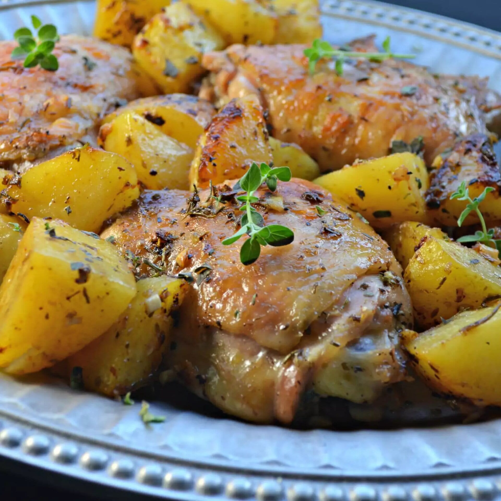

Lemon Chicken

Description
Looking for a dish that's both easy and delicious? Then give Greek Lemon Chicken and Potatoes a try! This dish is bursting with flavor and can be made in just 30 minutes. Plus, it's a healthy option that will fill you up without ruining your diet.
Ingredients
- 4 pounds skin-on, bone-in chicken thighs
- 3 russet potatoes, peeled and quartered
- 1/2 cup fresh lemon juice
- 1/2 cup olive oil
- 6 cloves garlic, minced
- 1 tablespoon dried oregano
- 1 tablespoon kosher salt
- 1 teaspoon dried rosemary
- 1 teaspoon freshly ground black pepper
- 1 pinch cayenne pepper
- 1 cup chicken broth, divided
- 1 teaspoon chopped fresh oregano, or to taste
Steps
- Preheat the oven to 425 degrees F (220 degrees C). Lightly oil a large roasting pan.
- Place chicken and potatoes in a large bowl. Add lemon juice, olive oil, garlic, dried oregano, salt, rosemary, black pepper, and cayenne. Toss until chicken and potatoes are evenly coated.
- Place chicken pieces skin-side up in the prepared pan. tuck potato pieces around chicken. Drizzle with 2/3 cup chicken broth. Spoon any remaining marinade from the bowl over chicken and potatoes.
- Bake in the preheated oven for 20 minutes. Toss chicken and potatoes, then place chicken skin-side up again.
- Continue baking until chicken is browned and cooked through, about 25 minutes more; an instant-read thermometer inserted near the bone should register 165 degrees F (74 degrees C).
- Transfer chicken to a serving platter and keep warm; leave potatoes in the pan.
- Turn on the broiler, or set oven to highest heat. Toss potatoes again to coat in pan juices. Place the pan under the broiler and broil until potatoes are crisped, about 3 minutes.
- Transfer potatoes to the platter with chicken.
- Place the roasting pan on the stovetop over medium heat. Add the remaining 1/3 cup chicken broth and scrape up browned bits from the bottom of the pan. Strain pan juices over chicken and potatoes. Sprinkle with fresh oregano.